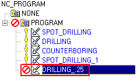
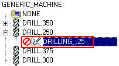

In the Program Order view of the Operation Navigator, right-click SPOT_DRILLING_1 and choose Copy.
Right-click SPOT_DRILLING_1 and choose Paste.
SPOT_DRILLING_1_COPY should be the last operation in the program.
Right-click SPOT_DRILLING_1_COPY and choose Rename.
Change the name of the copied operation to DRILLING_.25 and press Enter.
It is easier to copy the existing spot drilling operation and make minor changes than it is to recreate the entire operation.

In the Operation Navigator, right-click in the background and choose Machine Tool View.
Right-click in the background again and choose Expand All.
You need to change the tool that is used by the DRILLING_.25 operation. You will change the current tool from a spot drill tool to a drill tool. This can be done in the Machine Tool View of the Operation Navigator by dragging the operation out of one tool object and dropping it onto the desired tool object.
Drag the DRILLING_.25 operation (found inside the SPOTDRILLING_TOOL object) onto the DRILL.250 object.
The operation should be contained inside the DRILL.250 object as shown.
